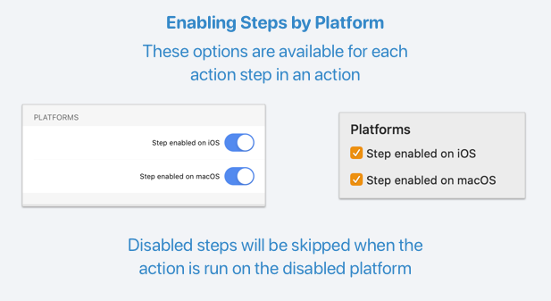

Now that actions are available for both Mac and iOS, you may find there are times it makes sense for a single action to behave differently on one platform or the other, because URL schemes are different, or a particular app is only available on one platform, etc.
Do make an action behave differently, Drafts allows you to enable or disable individual action steps by platform in the action editor. Scripts can also detect the current platform using the Device object. Let’s take a look at examples of each method.
Enabling Action Steps by Platform
This post assumes you have edited actions before. If you are new to editing actions, start with the action docs first.
In the action editor, each step has options to enable or disable that step by platform.

If the step is not enabled for the current platform, when the action is run it will simply be skipped.
Gmail and Fantastical Examples
A common case where it makes sense to branch the functionality of an action, is the case where URLs used to integrate with an app or service are not the same on different platforms. Here are two example actions demonstrating:
-
Send to Gmail
- On iOS, there is a native Gmail app. When running on iOS, this action will open a new email message in the native Gmail app.
- On Mac, there is no native Gmail app available, so this action reverts to opening a new message in the Gmail web interface.
-
Parse in Fantastical
- This example, created by @RosemaryOrchard as part of her excellent MacStories Review of Drafts 16, uses the same technique to address the fact that while the popular calendar app Fantastical is available for both iOS and Mac, the app uses slightly different URL schemes on the different platforms.
Failing Gracefully
Another good use case for enabling and disabling action steps by platform is the case where an action is known to only work on one platform, because a particular app or service is not available. In this case, if you are publishing actions to the directory, it is useful to provide feedback to users if they try to install and run the action on an unsupported platform.
Say you have an URL-based action for an app only available on iOS. In the action configuration, enable the URL step for the app only on iOS and disable it for Mac. Then add a Prompt action step that is enabled only on Mac, and displays a friendly message, like “This action is not compatible with Mac.”
The Preview in Marked example demonstrates this in the inverse, as the Marked app is only available on Mac.
Detecting Platform in Script
In script action steps, if you wish to detect if the action is currently being performed on the Mac or iOS, use the example below:
// branch logic based on platform
if (device.systemName == 'macOS') {
// do something only on Mac
}
else {
// do somethign only on iOS
}
More details can be found in the Device object scripting documentation